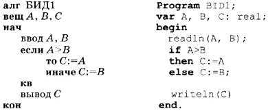
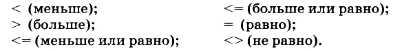
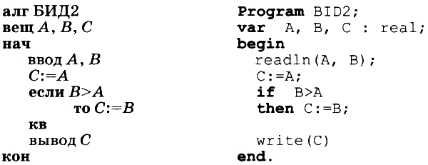
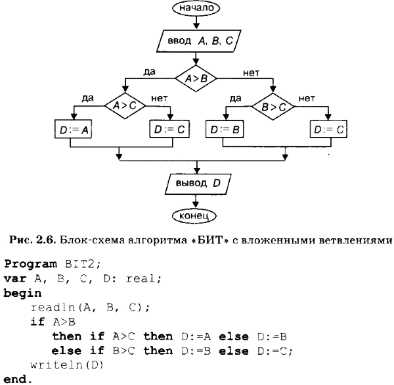
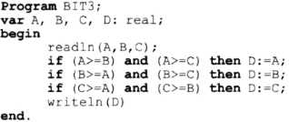

§13.Программирование ветвлений на Паскале.
Основные темы параграфа:
-оператор ветвления на Паскале;
-программирование полного и неполного ветвления;
-программирование вложенных ветвлений;
-логические операции;
-сложные логические выражения;
-коротко о главном;
-вопросы и задания;
-тест для самопроверки;
В языке Паскаль имеется оператор ветвления. Другое его название — условный оператор.
Формат полного оператора ветвления следующий:
if <логическое выражение> then <оператор1> else <оператор2>
Здесь if — «если», then — «то», else — «иначе».
Сравните запись алгоритма БИД 1 из предыдущего параграфа с соответствующей программой.

Очень похоже на перевод с русского языка на английский. Обратите внимание на следующее отличие: в программе нет специального
служебного слова, обозначающего конец ветвления. Здесь признаком конца оператора ветвления является точка с запятой. (Разумеется,
оставлять в программе пустую строку совсем не обязательно. Здесь это сделано только ради наглядности.)
Простой формой логического выражения является операция отношения. Как и в АЯ, в Паскале допускаются все виды отношений
(ниже указаны их знаки):

А теперь запрограммируем на Паскале алгоритм БИД2, в котором использовано неполное ветвление.

Опять всё очень похоже. Ветвь else в операторе ветвления может отсутствовать.
Запишем на Паскале программу определения большего из трех чисел, блок-схема которой показана на рис. 2.6. Структура этого
алгоритма — вложенные ветвления. Алгоритм на АЯ (БИТ2) приведен в предыдущем параграфе.

Обратите внимание на то, что перед else символ «;» не ставится, так как этот символ является разделителем операторов. Вся
ветвящаяся часть структуры алгоритма заканчивается на точке с запятой после оператора D:=С.
Составим программу упорядочения значений двух переменных.

Этот пример иллюстрирует следующее правило Паскаля: если на какой-то из ветвей оператора ветвления находится несколько
последовательных операторов, то их нужно записывать между служебными словами begin и end. Конструкция такого вида:
begin <последовательность операторов> end
называется составным оператором. Следовательно, в описанной выше общей форме ветвления <оператор1> и <оператор2>
могут быть простыми и составными операторами.
Наконец, составим еще один, третий вариант программы определения наибольшего числа из трех.

Нетрудно понять смысл этой программы. Здесь использованы три последовательных неполных ветвления. А условия ветвлений
представляют собой сложные логические выражения, включающие логическую операцию and (И). С логическими операциями
вы встречались, работая с базами данных и с электронными таблицами.
Напомним, что операция and называется логическим умножением или конъюнкцией. Ее результат — «истина», если значения
обоих операндов — «истина». Очевидно, что если А ≥ В и А ≥ С, то А имеет наибольшее значение и т. д. В Паскале присутствуют все
три основные логические операции:
and — И (конъюнкция), or — ИЛИ (дизъюнкция), not — НЕ (отрицание).
Замечание. Мы рассмотрели три варианта решения задачи о поиске максимального числа из трех заданных (БИТ1, БИТ2, БИТЗ).
Предложенные варианты решения, помимо всего прочего, отличаются еще и эффективностью: эффективность тем выше, чем меньше
исполняется операций при выполнении программы. С этой точки зрения, самым неэффективным является алгоритм БИТЗ. В любом
случае в нем будет выполняться 6 операций отношения. При исполнении алгоритмов БИТ1 и БИТ2 выполняются 2 операции отношения.
Понятно, что на практике необходимо использовать наиболее эффективные алгоритмы.
Обратите внимание на то, что отношения, связываемые логическими операциями, заключаются в скобки. Так надо делать всегда!
Например, требуется определить, есть ли среди чисел А, В, С хотя бы одно отрицательное. Эту задачу решает следующий оператор
ветвления:
if (А<0) or (В<0) or (С<0) then write ( 'YES ') else write ( 'NO ')
Выражение, истинное для отрицательного числа, может быть записано еще и так:
not(А>=0)
Формат оператора ветвления (условного оператора) Паскаля:
if <логическое выражение> then <оператор1> else <оператор2>
На ветвях условного оператора могут находиться простые или составные операторы. Составной оператор — это последовательность
операторов, заключенная между служебными словами begin и end.
В сложных логических выражениях используются логические операции: and, or, not.
1. Как программируется на Паскале полное и неполное ветвление?
2. Что такое составной оператор? В каких случаях составной оператор используется в операторе ветвления?
3. Выполните на компьютере все программы, приведенные в данном параграфе.
4. Составьте не менее трех вариантов программы определения наименьшего из трех данных чисел.
5. Составьте программу сортировки по возрастанию значений трех переменных: А, В, С.
6. Составьте программу вычисления корней квадратного уравнения по данным значениям его коэффициентов.
Тест для самопроверки